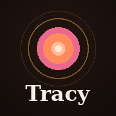

TRACY
Enter your access key to continue.
Enter
TRACY
INTERVERSE
Desktop
Mobile
Game Studios
New Hire
Admin
🔊
⚙

Install Tracy
Add her to your home screen for a full-screen app.
Install
✕
Settings
Backend URL
User ID
Your identity to Tracy — keys your memory, check-ins, and admin access. Set it to the same value on every browser/device you use (e.g. an ID your admin assigned) so you stay recognized everywhere.
App & notifications
Install Tracy
Install
Notify me on this device
Your Anthropic API key (optional)
Use your own key so usage bills your Anthropic account. Stored only in this browser, sent straight to the backend. Get one at console.anthropic.com — a Claude Pro/Max subscription is not an API key.
Speak Tracy's replies aloud
Auto-send after voice input
Hands-free (open mic)
Voice
Speed
Pitch
Pause before I send
How long to wait after you stop talking before sending. Longer = more time to finish your thought.
Voice corrections
Tracy also learns these automatically when you fix a transcript before sending.
Daily check-ins
Email for check-ins
Where Tracy emails your daily summary. Requires email to be set up on the server.
Email me a daily check-in
Save check-ins
Send test now
Tracy's learning
—
Clear chat
Done